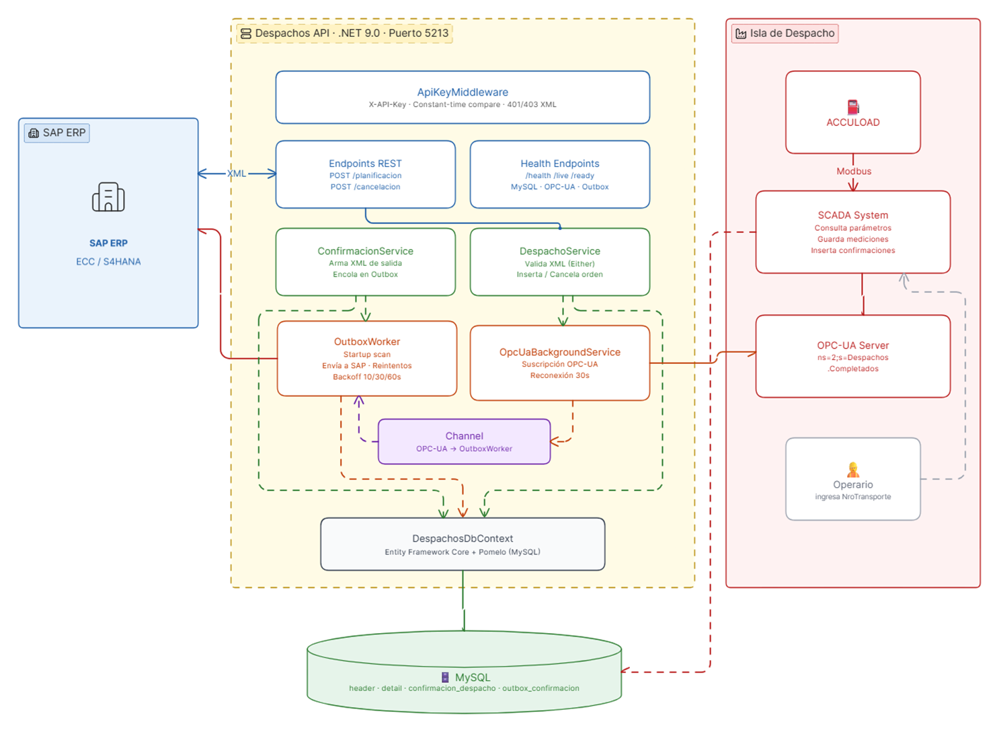

Sistema de Integración de Despachos
Petroperú — Interfaz SAP ↔ Isla de Despacho
Versión 1.0
Mayo 2026
Confidencial
Documento de descripción funcional y preguntas abiertas para alineamiento del proyecto.
1. Resumen
Se desarrolla un Servicio Web intermedio (.NET 9, puerto 5213) que actúa como
puente entre el sistema SAP ERP y la Isla de Despacho de Petroperú.
El servicio recibe las órdenes de planificación de carga desde SAP, las pone a disposición
del sistema SCADA para que el operario ejecute la carga física de combustible,
y finalmente envía la confirmación de despacho de vuelta a SAP en forma automática.
2. Componentes del Sistema
Componente
Responsabilidad
Tecnología
SAP ERP
Genera órdenes de transporte y recibe confirmaciones de despacho
SAP ECC / S/4HANA
Despachos API
Expone endpoints REST para SAP, persiste órdenes, coordina confirmación automática
.NET 9, Minimal API
MySQL
Base de datos compartida entre la API y el SCADA. Fuente de verdad de órdenes y confirmaciones
MySQL 8+, Entity Framework / Pomelo
SCADA System
Consulta la orden, registra mediciones (temperatura, volumen, API) y señaliza completado
Sistema SCADA existente
OPC-UA Server
Canal de señalización de "despacho completado" desde SCADA hacia el servicio web
Servidor OPC-UA del SCADA
ACCULOAD
Computadora de flujo que controla la carga física; se comunica con SCADA vía Modbus
Hardware existente
3. Diagrama de Arquitectura

4. Cómo Se Usa el Sistema
4.1 Planificación de Carga (SAP → Isla)
SAP envía una orden de transporte al servicio antes de que el camión llegue a la isla:
1 SAP genera orden de transporte
→
2 POST /planificacion con XML +
X-API-Key
→
3 Validación y persistencia en MySQL
→
4 Respuesta 200 OK / 400 / 409 a SAP
El servicio valida el XML, detecta duplicados (idempotencia) y guarda la orden en estado
Pendiente. Si SAP reenvía la misma orden en estado Pendiente, se actualiza;
en cualquier otro estado se responde 409 Conflict.
4.2 Carga Física en Isla
El operario llega a la isla y el SCADA orquesta el proceso sin intervención de SAP:
1 Operario ingresa NroTransporte en ACCULOAD
→
2 SCADA lee NroTransporte vía Modbus
→
3 SCADA consulta la orden en MySQL
→
4 Operario ejecuta carga de combustible
→
5 SCADA registra mediciones en MySQL
→
6 SCADA escribe NroTransporte|1 en OPC-UA
4.3 Confirmación Automática a SAP (SAP ← Isla)
Al recibir la señal OPC-UA, el servicio construye y envía el XML de confirmación a SAP:
1 OPC-UA notifica al servicio
→
2 Se arma XML de confirmación (por compartimento)
→
3 Registro en tabla outbox_confirmacion
→
4 POST HTTP a SAP con reintentos automáticos
→
5 Orden pasa a estado Confirmado
Si SAP no está disponible, el servicio reintenta hasta 3 veces con backoff progresivo
(10 s / 30 s / 60 s). Al reiniciar el servicio, un startup scan recupera
automáticamente cualquier confirmación pendiente que no se haya enviado.
4.4 Cancelación de Orden
SAP puede cancelar una orden enviando POST /cancelacion con el
NroTransporte. Solo se acepta cancelación cuando la orden está en estado
Pendiente (el camión aún no inició la carga).
5. Ciclo de Vida de una Orden de Despacho
Pendiente
→ SCADA inicia carga →
En Proceso
→ SCADA completa →
Completado
→ SAP confirma 2xx →
Confirmado
Pendiente
→ SAP cancela →
Cancelado
Completado
→ SAP rechaza / agota reintentos →
Error
Nota operativa: Las órdenes en estado Error
(SAP rechazó o agotó reintentos) requieren intervención manual para determinar si se
reintenta el envío o se escala a operaciones. Este procedimiento debe definirse con el
equipo SAP (ver Pregunta 37 en la sección de consultas).
6. Seguridad y Conectividad
Aspecto
Mecanismo actual
Autenticación SAP → Servicio
Header X-API-Key con comparación en tiempo constante (sin timing attacks). Respuesta 401/403
en XML.
Autenticación Servicio → SAP
Usuario y contraseña (confirmado en reunión). Mecanismo exacto pendiente: HTTP Basic Auth o login con
token — ver Pregunta 14.
OPC-UA
Usuario + contraseña configurados por variable de entorno.
Base de datos
Acceso solo desde red interna; credenciales por variable de entorno.
TLS / HTTPS
A confirmar con el cliente (ver Pregunta 24).
7. Disponibilidad y Resiliencia
Escenario
Comportamiento del servicio
OPC-UA no disponible al inicio
El servicio arranca en modo degradado, acepta órdenes de SAP e intenta reconectar al OPC-UA cada 30
segundos.
SAP no disponible al enviar confirmación
Reintenta hasta 3 veces con backoff 10 s / 30 s / 60 s. Si agota reintentos, marca la confirmación como
Error.
Reinicio del servicio con confirmaciones pendientes
Al arrancar, el startup scan detecta y reenvía automáticamente cualquier confirmación no
entregada.
Apagado del servicio
Graceful shutdown: espera hasta 30 s para que el worker de outbox termine sus operaciones en curso.
Health checks
GET /health reporta estado de MySQL, OPC-UA y cola de outbox. Disponible para monitoreo
externo sin autenticación.
8. Preguntas Abiertas
Las siguientes preguntas deben resolverse antes del inicio de las pruebas de integración.
8.1 Planificación de Carga (SAP → Servicio)
#
Pregunta
Prioridad
1
¿URL base de SAP (dev / qa / prod) desde donde enviarán el POST a /planificacion?
¿Es a través de SAP PI/PO o directo desde S/4HANA?
Bloqueante
2
¿Qué valor de X-API-Key usará SAP para autenticarse? Necesitamos el valor por cada ambiente.
Bloqueante
3
¿SAP soporta la lógica de idempotencia? Si reenvían un mismo NroTransporte en estado
Pendiente, hacemos update. En cualquier otro estado respondemos 409 Conflict.
¿Ese comportamiento es aceptable?
Bloqueante
4
Confirmar formato de FechaCarga: ¿siempre yyyyMMdd sin hora? ¿En qué zona
horaria?
Alta
6
UMVol: ¿qué códigos de unidad de medida usa SAP (ej. GAL, L,
BBL)? ¿Catálogo disponible?
Alta
7
API en el Detail: ¿proviene del maestro de materiales o es calculado por SAP? ¿Es
obligatorio?
Alta
9
BayQueuePriority: ¿qué valores posibles y qué criterio usa SAP para asignar la prioridad de
cola en bahía?
Alta
12
¿Hay un límite máximo de compartimentos por transporte? (El servicio valida que
NroCompartimento no se duplique dentro de la misma orden.)
Media
8.2 Confirmación de Carga (Servicio → SAP)
#
Pregunta
Prioridad
13
URL exacta del endpoint SAP que recibirá el POST con el XML de confirmación
(por ambiente: dev, qa, prod).
Bloqueante
14
En la reunión se confirmó que el servicio se autenticará con usuario y contraseña
al llamar al endpoint SAP de confirmación. ¿Cuál es el mecanismo exacto?
HTTP Basic Auth: credenciales en cabecera
Authorization: Basic <base64> en cada request.
Login con token: primero se hace POST a una URL de login con user/pass y se obtiene
un token Bearer que luego se adjunta en cada request.
Indicar también las credenciales (usuario y contraseña) por ambiente (dev / qa / prod).
Bloqueante
16
Formato de decimales: ¿SAP espera punto (.) o coma (,) como separador decimal?
Precisión actual: Temperatura (6,2) · APIDespachado (8,4) · VolObservado (16,2) · Vol60 (16,2).
Bloqueante
17
¿Qué HTTP status codes devuelve SAP ante una confirmación?
Asumimos: 2xx = éxito, 4xx = error no reintentable, 5xx = reintento. ¿Confirman?
Bloqueante
18
Estrategia de reintentos actual: 3 intentos máximos con backoff 10 s / 30 s / 60 s.
¿Les parece adecuado? ¿Tienen ventana de timeout en SAP?
Alta
20
¿Existe un procedimiento de conciliación en SAP cuando una confirmación queda en estado
Error? ¿O se maneja manualmente por operaciones?
Alta
8.3 Cancelación de Órdenes
#
Pregunta
Prioridad
22
¿En qué escenarios de negocio SAP cancela una orden? (Solo aceptamos cancelación en estado
Pendiente; si el camión ya inició la carga, se debe coordinar con operaciones.)
Alta
8.4 Conectividad y Seguridad
#
Pregunta
Prioridad
23
¿Las comunicaciones SAP ↔ Servicio Web son dentro de la red interna de Petroperú
o requieren túnel VPN?
Bloqueante
24
¿Se requiere TLS (HTTPS)? ¿SAP provee certificado o se usan certificados internos
de la organización?
Bloqueante
25
¿Hay direcciones IP estáticas que debamos whitelistear en ambos extremos?
Alta
26
¿SAP requiere autenticación mutua TLS (mTLS) además del X-API-Key?
Alta
27
¿Política de rotación de API Keys? ¿Cada cuánto rotan y quién gestiona las credenciales?
Media
8.5 Entornos y Pruebas
#
Pregunta
Prioridad
31
¿Existe un ambiente SAP de desarrollo / QA para pruebas de integración?
Solicitamos URLs y credenciales por ambiente.
Bloqueante
32
¿Pueden proporcionar un conjunto de datos de prueba con órdenes representativas
(anonimizadas)?
Alta
33
¿Cómo podemos simular envíos de SAP durante el desarrollo? ¿Tienen colecciones Postman /
SOAP UI, o herramienta interna?
Alta
34
¿Hay ventanas de mantenimiento programadas de SAP que debamos considerar para el
comportamiento de startup degradado del servicio?
Media
8.6 Proceso Operativo, SLA y Go-Live
#
Pregunta
Prioridad
35
¿Cuál es el SLA de respuesta esperado para la confirmación de carga desde que el SCADA
completa el despacho en isla?
Alta
36
¿Se necesita un acuerdo de recuperación ante caída simultánea de ambos sistemas?
¿Orden de arranque recomendada?
Alta
37
¿Hay un procedimiento operativo definido cuando SAP rechaza una confirmación con 4xx?
¿Quién corrige y cómo se escala?
Alta
Anexo A — Endpoints del Servicio Web
Método
Ruta
Descripción
Autenticación
POST
/planificacion
Recibe Planificación de Carga de SAP (XML)
X-API-Key
POST
/cancelacion
Cancela orden en estado Pendiente
X-API-Key
GET
/health
Estado del servicio (MySQL, OPC-UA, Outbox)
—
GET
/health/ready
Readiness probe (orquestador)
—
GET
/health/live
Liveness probe (orquestador)
—
Anexo B — Especificación Oficial de Campos (Petroperú)
B.1 Planificación de Carga — HEADER
Campo
Nombre en XML
Descripción
Tipo
Nro. Transporte
NroTransporte
Código del transporte
CHAR 10
Terminal
Terminal
Código del Terminal RAD (Tabla ZVASD_SCO_EQUIV1)
CHAR 20
Mayorista
Mayorista
Código del Mayorista RAD (ZVASD_SCO_EQUIV1)
CHAR 20
Placa vehículo
PlacaVeh
Placa del vehículo (ambas placas concatenadas)
CHAR 13
Fecha de carga
FechaCarga
Fecha de carga
CHAR 8
DNI conductor
DNI
DNI del conductor
CHAR 8
Terminal destino
Destino
Terminal destino (ZVASD_SCO_EQUIV1)
CHAR 20
Viaje completo
IndViaje
Flag de viaje completo
CHAR 1
Prioridad entrega
BayQueuePriority
Prioridad en el despacho
CHAR 16
B.1 Planificación de Carga — DETAIL
Campo
Nombre en XML
Descripción
Tipo
Nro. Transporte
NroTransporte
Código del transporte
CHAR 10
Nro. Entrega
NroEntrega
Código de la entrega
CHAR 10
Cliente
CustomerCode
Código de cliente
CHAR 16
Destinatario
Destinatario
Código de Destinatario SAP
CHAR 16
SCOPNumber
SCOP
Nro. de SCOP asociado
CHAR 20
Compartimento
NroCompartimento
Nro. compartimento
CHAR 3
Producto comercial
Producto
Código de material SAP
CHAR 18
Volumen
Volumen
Cantidad planificada
CHAR 16
Unidad de medida
UMVol
Unidad de medida del compartimento
CHAR 4
API
API
API del producto
CHAR 16
B.2 Confirmación de Carga — HEADER
Campo
Nombre en XML
Descripción
Tipo
Nro. Transporte
NroTransporte
Código del transporte
CHAR 10
B.2 Confirmación de Carga — DETAIL
Campo
Nombre en XML
Descripción
Tipo
Nro. Transporte
NroTransporte
Código del transporte
CHAR 10
Nro. Entrega
NroEntrega
Código de la entrega
CHAR 10
Compartimento
NroCompartimento
Nro. compartimento
CHAR 3
Producto comercial
Producto
Código de material SAP
CHAR 18
T° despachado
Temperatura
Temperatura al despacho
CHAR 16
API (*)
APIDespachado
API despachado (densidad para GLP)
CHAR 16
Vol. observado
Vol.DespachadoObs
Volumen observado despachado
CHAR 16
Unidad de medida
UMVol
Unidad de medida de volumen
CHAR 4
Vol. a 60°
Vol.Despachado60
Volumen corregido a 60 °F
CHAR 16
Mayo 2026 · TGI · Integración Despachos Petroperú v1.0